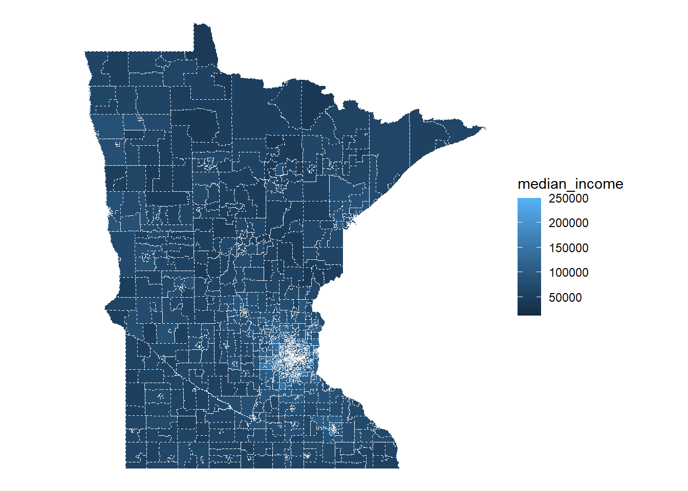
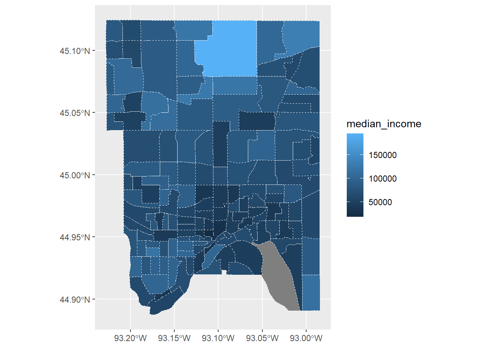
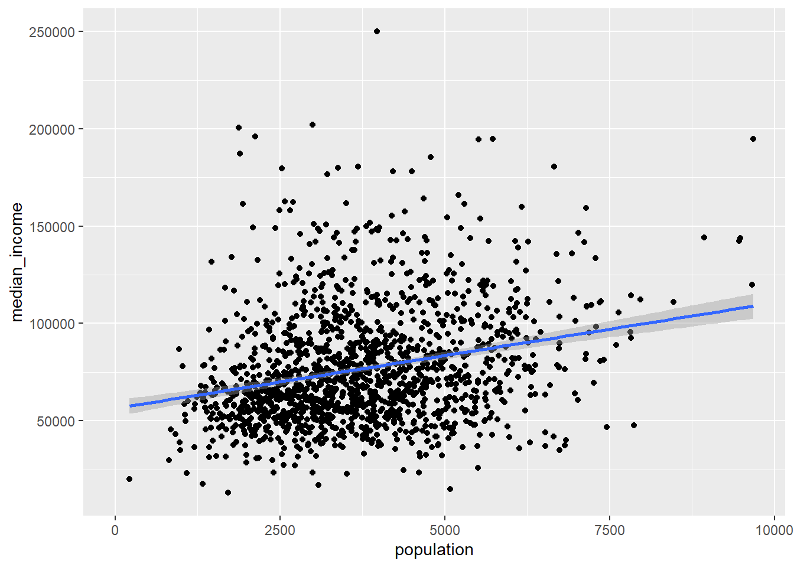

You can download this .qmd file from here. Just hit the Download Raw File button.
Credit to Brianna Heggeseth and Leslie Myint from Macalester College for a few of these descriptions and examples.
Getting data from websites
Option 1: APIs
When we interact with sites like The New York Times, Zillow, and Google, we are accessing their data via a graphical layout (e.g., images, colors, columns) that is easy for humans to read but hard for computers.
An API stands for Application Programming Interface, and this term describes a general class of tool that allows computers, rather than humans, to interact with an organization’s data. How does this work?
When we use web browsers to navigate the web, our browsers communicate with web servers using a technology called HTTP or Hypertext Transfer Protocol to get information that is formatted into the display of a web page.
Programming languages such as R can also use HTTP to communicate with web servers. The easiest way to do this is via Web APIs, or Web Application Programming Interfaces, which focus on transmitting raw data, rather than images, colors, or other appearance-related information that humans interact with when viewing a web page.
A large variety of web APIs provide data accessible to programs written in R (and almost any other programming language!). Almost all reasonably large commercial websites offer APIs. Todd Motto has compiled an expansive list of Public Web APIs on GitHub, although it’s about 3 years old now so it’s not a perfect or complete list. Feel free to browse this list to see what data sources are available.
For our purposes of obtaining data, APIs exist where website developers make data nicely packaged for consumption. The language HTTP (hypertext transfer protocol) underlies APIs, and the R package httr() (and now the updated httr2()) was written to map closely to HTTP with R. Essentially you send a request to the website (server) where you want data from, and they send a response, which should contain the data (plus other stuff).
The case studies in this document provide a really quick introduction to data acquisition, just to get you started and show you what’s possible. For more information, these links can be somewhat helpful:
In R, it is easiest to use Web APIs through a wrapper package, an R package written specifically for a particular Web API.
The R development community has already contributed wrapper packages for many large Web APIs (e.g. ZillowR, rtweet, genius, Rspotify, tidycensus, etc.)
To find a wrapper package, search the web for “R package” and the name of the website. For example:
Searching for “R Weather.com package” returns weatherData
rOpenSci also has a good collection of wrapper packages.
In particular, tidycensus is a wrapper package that makes it easy to obtain desired census information for mapping and modeling:
Obtaining raw data from the Census Bureau was that easy! Often we will have to obtain and use a secret API key to access the data, but that’s not always necessary with tidycensus.
# Rename cryptic variables from the census formsample_acs_data <- sample_acs_data |>rename(population = B01003_001E,population_moe = B01003_001M,median_income = B19013_001E,median_income_moe = B19013_001M)# Plot with geom_sf since our data contains 1 row per census tract# with its geometryggplot(data = sample_acs_data) +geom_sf(aes(fill = median_income), colour ="white", linetype =2) +theme_void()

# The whole state of MN is overwhelming, so focus on a single countysample_acs_data |>filter(str_detect(NAME, "Ramsey")) |>ggplot() +geom_sf(aes(fill = median_income), colour ="white", linetype =2)

# Look for relationships between variables with 1 row per tractas_tibble(sample_acs_data) |>ggplot(aes(x = population, y = median_income)) +geom_point() +geom_smooth(method ="lm")

Extra resources:
tidycensus: wrapper package that provides an interface to a few census datasets with map geometry included!
get_acs() is one of the functions that is part of tidycensus. Let’s explore what’s going on behind the scenes with get_acs()…
Accessing web APIs directly
Getting a Census API key
Many APIs (and their wrapper packages) require users to obtain a key to use their services.
This lets organizations keep track of what data is being used.
It also rate limits their API and ensures programs don’t make too many requests per day/minute/hour. Be aware that most APIs do have rate limits — especially for their free tiers.
Your request for a new API key has been successfully submitted. Please check your email. In a few minutes you should receive a message with instructions on how to activate your new key.
Check your email. Copy and paste your key into a new text file:
(In RStudio) File > New File > Text File (towards the bottom of the menu)
Save as census_api_key.txt in the same folder as this .qmd.
You could then read in the key with code like this:
Warning in readLines("C:/Users/charl/Documents/SDS_264/census_api_key"):
incomplete final line found on
'C:/Users/charl/Documents/SDS_264/census_api_key'
Handling API keys
While this works, the problem is once we start backing up our files to GitHub, your API key will also appear on GitHub, and you want to keep your API key secret. Thus, we might use environment variables instead:
One way to store a secret across sessions is with environment variables. Environment variables, or envvars for short, are a cross platform way of passing information to processes. For passing envvars to R, you can list name-value pairs in a file called .Renviron in your home directory. The easiest way to edit it is to run:
PATH = “path” VAR1 = “value1” VAR2 = “value2” And you can access the values in R using Sys.getenv():
Sys.getenv("VAR1")#> [1] "value1"
Note that .Renviron is only processed on startup, so you’ll need to restart R to see changes.
Another option is to use Sys.setenv and Sys.getenv:
# I used the first line to store my CENSUS API key in .Renviron# after uncommenting - should only need to run one time#Sys.setenv(CENSUS_API_KEY = "my personal key")my_census_api_key <-Sys.getenv("CENSUS_API_KEY")
Let’s look at the Population Estimates Example and the American Community Survey (ACS) Example. These examples walk us through the steps to incrementally build up a URL to obtain desired data. This URL is known as a web API request.
http://: The scheme, which tells your browser or program how to communicate with the web server. This will typically be either http: or https:.
api.census.gov: The hostname, which is a name that identifies the web server that will process the request.
data/2019/acs/acs1: The path, which tells the web server how to get to the desired resource.
In the case of the Census API, this locates a desired dataset in a particular year.
Other APIs allow search functionality. (e.g., News organizations have article searches.) In these cases, the path locates the search function we would like to call.
?get=NAME,B02015_009E,B02015_009M&for=state:*: The query parameters, which provide the parameters for the function you would like to call.
We can view this as a string of key-value pairs separated by &. That is, the general structure of this part is key1=value1&key2=value2.
key
value
get
NAME,B02015_009E,B02015_009M
for
state:*
Typically, each of these URL components will be specified in the API documentation. Sometimes, the scheme, hostname, and path (https://api.census.gov/data/2019/acs/acs1) will be referred to as the endpoint for the API call.
We will first use the httr2 package to build up a full URL from its parts.
request() creates an API request object using the base URL
req_url_path_append() builds up the URL by adding path components separated by /
req_url_query() adds the ? separating the endpoint from the query and sets the key-value pairs in the query
The .multi argument controls how multiple values for a given key are combined.
The I() function around "state:*" inhibits parsing of special characters like : and *. (It’s known as the “as-is” function.)
The backticks around for are needed because for is a reserved word in R (for for-loops). You’ll need backticks whenever the key name has special characters (like spaces, dashes).
We can see from here that providing an API key is achieved with key=YOUR_API_KEY.
# Request total number of Hmong residents and margin of error by state# in 2019, as in the User GuideCENSUS_API_KEY <-Sys.getenv("CENSUS_API_KEY")req <-request("https://api.census.gov") |>req_url_path_append("data") |>req_url_path_append("2019") |>req_url_path_append("acs") |>req_url_path_append("acs1") |>req_url_query(get =c("NAME", "B02015_009E", "B02015_009M"), `for`=I("state:*"), key = CENSUS_API_KEY, .multi ="comma")
Why would we ever use these steps instead of just using the full URL as a string?
To generalize this code with functions! (This is exactly what wrapper packages do.)
To handle special characters
e.g., query parameters might have spaces, which need to be represented in a particular way in a URL (URLs can’t contain spaces)
Once we’ve fully constructed our request, we can use req_perform() to send out the API request and get a response.
resp <-req_perform(req)resp
We see from Content-Type that the format of the response is something called JSON. We can navigate to the request URL to see the structure of this output.
JSON (Javascript Object Notation) is a nested structure of key-value pairs.
We can use resp_body_json() to parse the JSON into a nicer format.
Without simplifyVector = TRUE, the JSON is read in as a list.
NAME B02015_009E B02015_009M state
[1,] "Mississippi" NA NA "28"
[2,] "Missouri" "953" "1141" "29"
[3,] "Montana" NA NA "30"
[4,] "Nebraska" "412" "477" "31"
[5,] "Nevada" "863" "745" "32"
[6,] "New Hampshire" NA NA "33"
All right, let’s try this! First we’ll grab total population and median household income for all census tracts in MN using 3 approaches
# First using tidycenuslibrary(tidycensus)sample_acs_data <- tidycensus::get_acs(year =2021,state ="MN",geography ="tract",variables =c("B01003_001", "B19013_001"),output ="wide",geometry =TRUE,county ="Hennepin", # specify county in callshow_call =TRUE# see resulting query)
Write a for loop to obtain the Hennepin County data from 2017-2021
Write a function to give choices about year, county, and variables
# function to allow user inputsMN_tract_data <-function(year, county, variables) { tidycensus::get_acs(Sys.sleep(0.5),year = year,state ="MN",geography ="tract",variables = variables,output ="wide",geometry =TRUE,county = county ) |>mutate(year = year)}# Should really build in checks so that county is in MN, year is in # proper range, and variables are part of ACS1 data setmy_data <-MN_tract_data(year =2021,county ="Hennepin", variables =c("B01003_001", "B19013_001"))
Getting data from the 2017-2021 5-year ACS
Downloading feature geometry from the Census website. To cache shapefiles for use in future sessions, set `options(tigris_use_cache = TRUE)`.
Getting data from the 2018-2022 5-year ACS
Downloading feature geometry from the Census website. To cache shapefiles for use in future sessions, set `options(tigris_use_cache = TRUE)`.
# Try other variables:# - B25077_001 is median home price# - B02001_002 is number of white residents# - etc.# although the census codebook is admittedly quite daunting!
Use your function from (2) along with map and list_rbind to build a data set for Rice county for the years 2019-2021
# To examine trends over time in Rice County2019:2021|> purrr::map(\(x) MN_tract_data( x,county ="Rice", variables =c("B01003_001", "B19013_001") ) ) |>list_rbind()
Getting data from the 2015-2019 5-year ACS
Downloading feature geometry from the Census website. To cache shapefiles for use in future sessions, set `options(tigris_use_cache = TRUE)`.
Getting data from the 2016-2020 5-year ACS
Downloading feature geometry from the Census website. To cache shapefiles for use in future sessions, set `options(tigris_use_cache = TRUE)`.
Getting data from the 2017-2021 5-year ACS
Downloading feature geometry from the Census website. To cache shapefiles for use in future sessions, set `options(tigris_use_cache = TRUE)`.
GEOID NAME B01003_001E
1 27131070504 Census Tract 705.04, Rice County, Minnesota 3933
2 27131070400 Census Tract 704, Rice County, Minnesota 4511
3 27131070300 Census Tract 703, Rice County, Minnesota 4551
4 27131070503 Census Tract 705.03, Rice County, Minnesota 3348
5 27131070601 Census Tract 706.01, Rice County, Minnesota 3526
6 27131070800 Census Tract 708, Rice County, Minnesota 8101
7 27131070901 Census Tract 709.01, Rice County, Minnesota 5509
8 27131070700 Census Tract 707, Rice County, Minnesota 7165
9 27131070100 Census Tract 701, Rice County, Minnesota 7333
10 27131070602 Census Tract 706.02, Rice County, Minnesota 5211
11 27131070200 Census Tract 702, Rice County, Minnesota 5463
12 27131070902 Census Tract 709.02, Rice County, Minnesota 3160
13 27131070501 Census Tract 705.01, Rice County, Minnesota 4374
14 27131070501 Census Tract 705.01, Rice County, Minnesota 4272
15 27131070504 Census Tract 705.04, Rice County, Minnesota 3941
16 27131070801 Census Tract 708.01, Rice County, Minnesota 4456
17 27131070200 Census Tract 702, Rice County, Minnesota 5508
18 27131070701 Census Tract 707.01, Rice County, Minnesota 3057
19 27131070400 Census Tract 704, Rice County, Minnesota 4686
20 27131070300 Census Tract 703, Rice County, Minnesota 4737
21 27131070601 Census Tract 706.01, Rice County, Minnesota 3669
22 27131070102 Census Tract 701.02, Rice County, Minnesota 3786
23 27131070802 Census Tract 708.02, Rice County, Minnesota 3873
24 27131070702 Census Tract 707.02, Rice County, Minnesota 3872
25 27131070901 Census Tract 709.01, Rice County, Minnesota 5681
26 27131070503 Census Tract 705.03, Rice County, Minnesota 3185
27 27131070902 Census Tract 709.02, Rice County, Minnesota 2992
28 27131070101 Census Tract 701.01, Rice County, Minnesota 3428
29 27131070602 Census Tract 706.02, Rice County, Minnesota 5406
30 27131070902 Census Tract 709.02, Rice County, Minnesota 3212
31 27131070601 Census Tract 706.01, Rice County, Minnesota 3775
32 27131070503 Census Tract 705.03, Rice County, Minnesota 3035
33 27131070702 Census Tract 707.02, Rice County, Minnesota 3738
34 27131070901 Census Tract 709.01, Rice County, Minnesota 5858
35 27131070801 Census Tract 708.01, Rice County, Minnesota 4618
36 27131070501 Census Tract 705.01, Rice County, Minnesota 4242
37 27131070300 Census Tract 703, Rice County, Minnesota 4657
38 27131070200 Census Tract 702, Rice County, Minnesota 5419
39 27131070400 Census Tract 704, Rice County, Minnesota 4380
40 27131070701 Census Tract 707.01, Rice County, Minnesota 3028
41 27131070504 Census Tract 705.04, Rice County, Minnesota 3917
42 27131070101 Census Tract 701.01, Rice County, Minnesota 3417
43 27131070802 Census Tract 708.02, Rice County, Minnesota 3944
44 27131070102 Census Tract 701.02, Rice County, Minnesota 4201
45 27131070602 Census Tract 706.02, Rice County, Minnesota 5354
B01003_001M B19013_001E B19013_001M geometry year
1 273 63989 9273 MULTIPOLYGON (((-93.19137 4... 2019
2 168 85952 2758 MULTIPOLYGON (((-93.40564 4... 2019
3 190 78343 4242 MULTIPOLYGON (((-93.52521 4... 2019
4 245 92321 14200 MULTIPOLYGON (((-93.16075 4... 2019
5 333 50368 9979 MULTIPOLYGON (((-93.17615 4... 2019
6 465 48403 7679 MULTIPOLYGON (((-93.29819 4... 2019
7 456 44417 10552 MULTIPOLYGON (((-93.30904 4... 2019
8 414 67868 9422 MULTIPOLYGON (((-93.27265 4... 2019
9 326 91667 8106 MULTIPOLYGON (((-93.52452 4... 2019
10 310 64479 12376 MULTIPOLYGON (((-93.22644 4... 2019
11 177 101359 4104 MULTIPOLYGON (((-93.5246 44... 2019
12 410 45230 12887 MULTIPOLYGON (((-93.30888 4... 2019
13 270 66188 9179 MULTIPOLYGON (((-93.16981 4... 2019
14 316 64792 13256 MULTIPOLYGON (((-93.16981 4... 2020
15 536 63500 7351 MULTIPOLYGON (((-93.1909 44... 2020
16 703 67625 23325 MULTIPOLYGON (((-93.29829 4... 2020
17 473 104011 5648 MULTIPOLYGON (((-93.5246 44... 2020
18 218 73750 13139 MULTIPOLYGON (((-93.26704 4... 2020
19 296 86094 3438 MULTIPOLYGON (((-93.40564 4... 2020
20 244 79068 4902 MULTIPOLYGON (((-93.52518 4... 2020
21 525 52936 10436 MULTIPOLYGON (((-93.17615 4... 2020
22 199 96023 13649 MULTIPOLYGON (((-93.44292 4... 2020
23 437 63924 8715 MULTIPOLYGON (((-93.28272 4... 2020
24 425 49811 16864 MULTIPOLYGON (((-93.27265 4... 2020
25 566 51595 9615 MULTIPOLYGON (((-93.30904 4... 2020
26 341 100516 11630 MULTIPOLYGON (((-93.16075 4... 2020
27 440 46750 15457 MULTIPOLYGON (((-93.30888 4... 2020
28 295 100563 15809 MULTIPOLYGON (((-93.52452 4... 2020
29 377 62078 5270 MULTIPOLYGON (((-93.22644 4... 2020
30 421 47059 15456 MULTIPOLYGON (((-93.30888 4... 2021
31 435 56319 4333 MULTIPOLYGON (((-93.17615 4... 2021
32 321 105952 8429 MULTIPOLYGON (((-93.16075 4... 2021
33 409 57126 13968 MULTIPOLYGON (((-93.27265 4... 2021
34 714 47344 9579 MULTIPOLYGON (((-93.30904 4... 2021
35 622 61193 23977 MULTIPOLYGON (((-93.29829 4... 2021
36 380 79063 15272 MULTIPOLYGON (((-93.16981 4... 2021
37 296 83911 7244 MULTIPOLYGON (((-93.52522 4... 2021
38 520 111711 10313 MULTIPOLYGON (((-93.5246 44... 2021
39 274 90179 4919 MULTIPOLYGON (((-93.40564 4... 2021
40 358 82500 20934 MULTIPOLYGON (((-93.26775 4... 2021
41 537 67219 9805 MULTIPOLYGON (((-93.1909 44... 2021
42 270 108490 1768 MULTIPOLYGON (((-93.52452 4... 2021
43 462 63679 12261 MULTIPOLYGON (((-93.28274 4... 2021
44 199 85789 20094 MULTIPOLYGON (((-93.44292 4... 2021
45 359 63835 4805 MULTIPOLYGON (((-93.22644 4... 2021
# Or a little more simply2019:2021|> purrr::map(MN_tract_data,county ="Rice", variables =c("B01003_001", "B19013_001") ) |>list_rbind()
Getting data from the 2015-2019 5-year ACS
Downloading feature geometry from the Census website. To cache shapefiles for use in future sessions, set `options(tigris_use_cache = TRUE)`.
Getting data from the 2016-2020 5-year ACS
Downloading feature geometry from the Census website. To cache shapefiles for use in future sessions, set `options(tigris_use_cache = TRUE)`.
Getting data from the 2017-2021 5-year ACS
Downloading feature geometry from the Census website. To cache shapefiles for use in future sessions, set `options(tigris_use_cache = TRUE)`.
GEOID NAME B01003_001E
1 27131070504 Census Tract 705.04, Rice County, Minnesota 3933
2 27131070400 Census Tract 704, Rice County, Minnesota 4511
3 27131070300 Census Tract 703, Rice County, Minnesota 4551
4 27131070503 Census Tract 705.03, Rice County, Minnesota 3348
5 27131070601 Census Tract 706.01, Rice County, Minnesota 3526
6 27131070800 Census Tract 708, Rice County, Minnesota 8101
7 27131070901 Census Tract 709.01, Rice County, Minnesota 5509
8 27131070700 Census Tract 707, Rice County, Minnesota 7165
9 27131070100 Census Tract 701, Rice County, Minnesota 7333
10 27131070602 Census Tract 706.02, Rice County, Minnesota 5211
11 27131070200 Census Tract 702, Rice County, Minnesota 5463
12 27131070902 Census Tract 709.02, Rice County, Minnesota 3160
13 27131070501 Census Tract 705.01, Rice County, Minnesota 4374
14 27131070501 Census Tract 705.01, Rice County, Minnesota 4272
15 27131070504 Census Tract 705.04, Rice County, Minnesota 3941
16 27131070801 Census Tract 708.01, Rice County, Minnesota 4456
17 27131070200 Census Tract 702, Rice County, Minnesota 5508
18 27131070701 Census Tract 707.01, Rice County, Minnesota 3057
19 27131070400 Census Tract 704, Rice County, Minnesota 4686
20 27131070300 Census Tract 703, Rice County, Minnesota 4737
21 27131070601 Census Tract 706.01, Rice County, Minnesota 3669
22 27131070102 Census Tract 701.02, Rice County, Minnesota 3786
23 27131070802 Census Tract 708.02, Rice County, Minnesota 3873
24 27131070702 Census Tract 707.02, Rice County, Minnesota 3872
25 27131070901 Census Tract 709.01, Rice County, Minnesota 5681
26 27131070503 Census Tract 705.03, Rice County, Minnesota 3185
27 27131070902 Census Tract 709.02, Rice County, Minnesota 2992
28 27131070101 Census Tract 701.01, Rice County, Minnesota 3428
29 27131070602 Census Tract 706.02, Rice County, Minnesota 5406
30 27131070902 Census Tract 709.02, Rice County, Minnesota 3212
31 27131070601 Census Tract 706.01, Rice County, Minnesota 3775
32 27131070503 Census Tract 705.03, Rice County, Minnesota 3035
33 27131070702 Census Tract 707.02, Rice County, Minnesota 3738
34 27131070901 Census Tract 709.01, Rice County, Minnesota 5858
35 27131070801 Census Tract 708.01, Rice County, Minnesota 4618
36 27131070501 Census Tract 705.01, Rice County, Minnesota 4242
37 27131070300 Census Tract 703, Rice County, Minnesota 4657
38 27131070200 Census Tract 702, Rice County, Minnesota 5419
39 27131070400 Census Tract 704, Rice County, Minnesota 4380
40 27131070701 Census Tract 707.01, Rice County, Minnesota 3028
41 27131070504 Census Tract 705.04, Rice County, Minnesota 3917
42 27131070101 Census Tract 701.01, Rice County, Minnesota 3417
43 27131070802 Census Tract 708.02, Rice County, Minnesota 3944
44 27131070102 Census Tract 701.02, Rice County, Minnesota 4201
45 27131070602 Census Tract 706.02, Rice County, Minnesota 5354
B01003_001M B19013_001E B19013_001M geometry year
1 273 63989 9273 MULTIPOLYGON (((-93.19137 4... 2019
2 168 85952 2758 MULTIPOLYGON (((-93.40564 4... 2019
3 190 78343 4242 MULTIPOLYGON (((-93.52521 4... 2019
4 245 92321 14200 MULTIPOLYGON (((-93.16075 4... 2019
5 333 50368 9979 MULTIPOLYGON (((-93.17615 4... 2019
6 465 48403 7679 MULTIPOLYGON (((-93.29819 4... 2019
7 456 44417 10552 MULTIPOLYGON (((-93.30904 4... 2019
8 414 67868 9422 MULTIPOLYGON (((-93.27265 4... 2019
9 326 91667 8106 MULTIPOLYGON (((-93.52452 4... 2019
10 310 64479 12376 MULTIPOLYGON (((-93.22644 4... 2019
11 177 101359 4104 MULTIPOLYGON (((-93.5246 44... 2019
12 410 45230 12887 MULTIPOLYGON (((-93.30888 4... 2019
13 270 66188 9179 MULTIPOLYGON (((-93.16981 4... 2019
14 316 64792 13256 MULTIPOLYGON (((-93.16981 4... 2020
15 536 63500 7351 MULTIPOLYGON (((-93.1909 44... 2020
16 703 67625 23325 MULTIPOLYGON (((-93.29829 4... 2020
17 473 104011 5648 MULTIPOLYGON (((-93.5246 44... 2020
18 218 73750 13139 MULTIPOLYGON (((-93.26704 4... 2020
19 296 86094 3438 MULTIPOLYGON (((-93.40564 4... 2020
20 244 79068 4902 MULTIPOLYGON (((-93.52518 4... 2020
21 525 52936 10436 MULTIPOLYGON (((-93.17615 4... 2020
22 199 96023 13649 MULTIPOLYGON (((-93.44292 4... 2020
23 437 63924 8715 MULTIPOLYGON (((-93.28272 4... 2020
24 425 49811 16864 MULTIPOLYGON (((-93.27265 4... 2020
25 566 51595 9615 MULTIPOLYGON (((-93.30904 4... 2020
26 341 100516 11630 MULTIPOLYGON (((-93.16075 4... 2020
27 440 46750 15457 MULTIPOLYGON (((-93.30888 4... 2020
28 295 100563 15809 MULTIPOLYGON (((-93.52452 4... 2020
29 377 62078 5270 MULTIPOLYGON (((-93.22644 4... 2020
30 421 47059 15456 MULTIPOLYGON (((-93.30888 4... 2021
31 435 56319 4333 MULTIPOLYGON (((-93.17615 4... 2021
32 321 105952 8429 MULTIPOLYGON (((-93.16075 4... 2021
33 409 57126 13968 MULTIPOLYGON (((-93.27265 4... 2021
34 714 47344 9579 MULTIPOLYGON (((-93.30904 4... 2021
35 622 61193 23977 MULTIPOLYGON (((-93.29829 4... 2021
36 380 79063 15272 MULTIPOLYGON (((-93.16981 4... 2021
37 296 83911 7244 MULTIPOLYGON (((-93.52522 4... 2021
38 520 111711 10313 MULTIPOLYGON (((-93.5246 44... 2021
39 274 90179 4919 MULTIPOLYGON (((-93.40564 4... 2021
40 358 82500 20934 MULTIPOLYGON (((-93.26775 4... 2021
41 537 67219 9805 MULTIPOLYGON (((-93.1909 44... 2021
42 270 108490 1768 MULTIPOLYGON (((-93.52452 4... 2021
43 462 63679 12261 MULTIPOLYGON (((-93.28274 4... 2021
44 199 85789 20094 MULTIPOLYGON (((-93.44292 4... 2021
45 359 63835 4805 MULTIPOLYGON (((-93.22644 4... 2021
One more example using an API key
Here’s an example of getting data from a website that attempts to make imdb movie data available as an API.
Initial instructions:
go to omdbapi.com under the API Key tab and request a free API key
store your key as discussed earlier
explore the examples at omdbapi.com
We will first obtain data about the movie Coco from 2017.
# I addeed: Sys.setenv(OMDB_KEY = "")# I used the first line to store my OMDB API key in .Renviron# Sys.setenv(OMDB_KEY = "paste my omdb key here")myapikey <-Sys.getenv("OMDB_KEY")# Find url exploring examples at omdbapi.comurl <-str_c("http://www.omdbapi.com/?t=Coco&y=2017&apikey=", myapikey)coco <-GET(url) # coco holds response from servercoco # Status of 200 is good!
details <-content(coco, "parse") details # get a list of 25 pieces of information
$Title
[1] "Coco"
$Year
[1] "2017"
$Rated
[1] "PG"
$Released
[1] "22 Nov 2017"
$Runtime
[1] "105 min"
$Genre
[1] "Animation, Adventure, Drama"
$Director
[1] "Lee Unkrich, Adrian Molina"
$Writer
[1] "Lee Unkrich, Jason Katz, Matthew Aldrich"
$Actors
[1] "Anthony Gonzalez, Gael García Bernal, Benjamin Bratt"
$Plot
[1] "Aspiring musician Miguel, confronted with his family's ancestral ban on music, enters the Land of the Dead to find his great-great-grandfather, a legendary singer."
$Language
[1] "English, Spanish"
$Country
[1] "United States, Mexico"
$Awards
[1] "Won 2 Oscars. 112 wins & 42 nominations total"
$Poster
[1] "https://m.media-amazon.com/images/M/MV5BMDIyM2E2NTAtMzlhNy00ZGUxLWI1NjgtZDY5MzhiMDc5NGU3XkEyXkFqcGc@._V1_SX300.jpg"
$Ratings
$Ratings[[1]]
$Ratings[[1]]$Source
[1] "Internet Movie Database"
$Ratings[[1]]$Value
[1] "8.4/10"
$Ratings[[2]]
$Ratings[[2]]$Source
[1] "Rotten Tomatoes"
$Ratings[[2]]$Value
[1] "97%"
$Ratings[[3]]
$Ratings[[3]]$Source
[1] "Metacritic"
$Ratings[[3]]$Value
[1] "81/100"
$Metascore
[1] "81"
$imdbRating
[1] "8.4"
$imdbVotes
[1] "635,840"
$imdbID
[1] "tt2380307"
$Type
[1] "movie"
$DVD
[1] "N/A"
$BoxOffice
[1] "$210,460,015"
$Production
[1] "N/A"
$Website
[1] "N/A"
$Response
[1] "True"
details$Year # how to access details
[1] "2017"
details[[2]] # since a list, another way to access
[1] "2017"
Now build a data set for a collection of movies
# Must figure out pattern in URL for obtaining different movies# - try searching for othersmovies <-c("Coco", "Wonder+Woman", "Get+Out", "The+Greatest+Showman", "Thor:+Ragnarok")# Set up empty tibbleomdb <-tibble(Title =character(), Rated =character(), Genre =character(),Actors =character(), Metascore =double(), imdbRating =double(),BoxOffice =double())# Use for loop to run through API request process 5 times,# each time filling the next row in the tibble# - can do max of 1000 GETs per dayfor(i in1:5) { url <-str_c("http://www.omdbapi.com/?t=",movies[i],"&apikey=", myapikey)Sys.sleep(0.5) onemovie <-GET(url) details <-content(onemovie, "parse") omdb[i,1] <- details$Title omdb[i,2] <- details$Rated omdb[i,3] <- details$Genre omdb[i,4] <- details$Actors omdb[i,5] <-parse_number(details$Metascore) omdb[i,6] <-parse_number(details$imdbRating) omdb[i,7] <-parse_number(details$BoxOffice) # no $ and ,'s}omdb
(Based on final project by Mary Wu and Jenna Graff, MSCS 264, Spring 2024). Start with a small data set on 56 national parks from kaggle, and supplement with columns for the park address (a single column including address, city, state, and zip code) and a list of available activities (a single character column with activities separated by commas) from the park websites themselves.